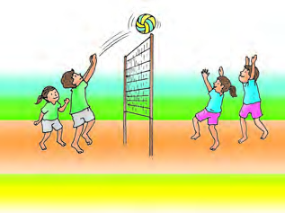
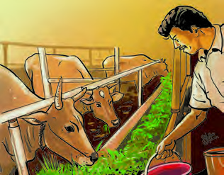
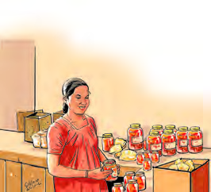
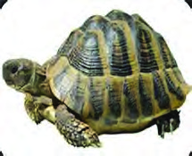
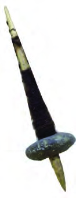
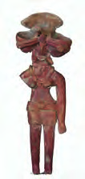
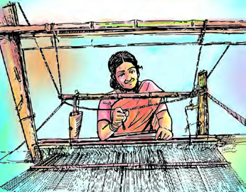
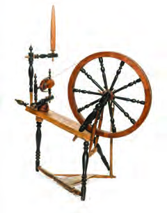
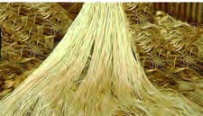
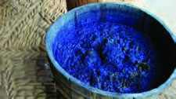

Figure fig_ch03_p041_01 (Page 41)

Figure fig_ch03_p041_02 (Page 41)
Figure fig_ch03_p041_03 (Page 41)
Figure fig_ch03_p041_04 (Page 41)
Figure fig_ch03_p041_05 (Page 41)
Figure fig_ch03_p041_06 (Page 41)
 Figure fig_ch03_p041_07 (Page 41)
Figure fig_ch03_p041_08 (Page 41)
Figure fig_ch03_p041_07 (Page 41)
Figure fig_ch03_p041_08 (Page 41)
 Figure fig_ch03_p041_09 (Page 41)
Figure fig_ch03_p041_09 (Page 41)
 Figure fig_ch03_p041_10 (Page 41)
Figure fig_ch03_p041_11 (Page 41)
Figure fig_ch03_p041_10 (Page 41)
Figure fig_ch03_p041_11 (Page 41)
Figure fig_ch03_p042_01 (Page 42)
Figure fig_ch03_p042_03 (Page 42)
Figure fig_ch03_p042_04 (Page 42)
Figure fig_ch03_p042_06 (Page 42)
Figure fig_ch03_p042_07 (Page 42)
Figure fig_ch03_p042_08 (Page 42)
Figure fig_ch03_p042_09 (Page 42)
Figure fig_ch03_p044_01 (Page 44)
Figure fig_ch03_p044_02 (Page 44)
Figure fig_ch03_p044_03 (Page 44)
Figure fig_ch03_p044_04 (Page 44)
Figure fig_ch03_p044_05 (Page 44)
Figure fig_ch03_p044_06 (Page 44)
Figure fig_ch03_p044_07 (Page 44)
Figure fig_ch03_p044_09 (Page 44)
Figure fig_ch03_p044_10 (Page 44)
Figure fig_ch03_p044_11 (Page 44)
Figure fig_ch03_p044_12 (Page 44)
Figure fig_ch03_p044_13 (Page 44)
Figure fig_ch03_p044_14 (Page 44)
Figure fig_ch03_p044_15 (Page 44)
Figure fig_ch03_p044_21 (Page 44)
Figure fig_ch03_p045_03 (Page 45)
Figure fig_ch03_p045_04 (Page 45)
Figure fig_ch03_p045_05 (Page 45)

Figure fig_ch03_p045_06 (Page 45)
Figure fig_ch03_p045_08 (Page 45)
Figure fig_ch03_p045_10 (Page 45)
Figure fig_ch03_p045_11 (Page 45)
Figure fig_ch03_p045_12 (Page 45)
Figure fig_ch03_p045_13 (Page 45)
 Figure fig_ch03_p045_14 (Page 45)
Figure fig_ch03_p045_14 (Page 45)
Figure fig_ch03_p047_03 (Page 47)
Figure fig_ch03_p047_04 (Page 47)
Figure fig_ch03_p047_05 (Page 47)
Figure fig_ch03_p047_06 (Page 47)
Figure fig_ch03_p047_07 (Page 47)
Figure fig_ch03_p047_09 (Page 47)
Figure fig_ch03_p048_03 (Page 48)
Figure fig_ch03_p048_05 (Page 48)
Figure fig_ch03_p048_06 (Page 48)
Figure fig_ch03_p048_07 (Page 48)

Figure fig_ch03_p048_08 (Page 48)
Figure fig_ch03_p048_09 (Page 48)
Figure fig_ch03_p048_11 (Page 48)
Figure fig_ch03_p049_01 (Page 49)
Figure fig_ch03_p049_03 (Page 49)
Figure fig_ch03_p049_04 (Page 49)
 Figure fig_ch03_p049_05 (Page 49)
Figure fig_ch03_p049_06 (Page 49)
Figure fig_ch03_p049_07 (Page 49)
Figure fig_ch03_p049_05 (Page 49)
Figure fig_ch03_p049_06 (Page 49)
Figure fig_ch03_p049_07 (Page 49)
 Figure fig_ch03_p050_01 (Page 50)
Figure fig_ch03_p050_02 (Page 50)
Figure fig_ch03_p050_03 (Page 50)
Figure fig_ch03_p050_01 (Page 50)
Figure fig_ch03_p050_02 (Page 50)
Figure fig_ch03_p050_03 (Page 50)

Figure fig_ch03_p050_04 (Page 50)
Figure fig_ch03_p050_05 (Page 50)

Figure fig_ch03_p052_01 (Page 52)
Figure fig_ch03_p052_02 (Page 52)
Figure fig_ch03_p052_04 (Page 52)
Figure fig_ch03_p052_05 (Page 52)
Figure fig_ch03_p052_07 (Page 52)
Figure fig_ch03_p052_08 (Page 52)
Figure fig_ch03_p052_09 (Page 52)

Figure fig_ch03_p052_10 (Page 52)
Figure fig_ch03_p052_11 (Page 52)
Figure fig_ch03_p052_12 (Page 52)
Figure fig_ch03_p052_13 (Page 52)
 Figure fig_ch03_p052_14 (Page 52)
Figure fig_ch03_p052_14 (Page 52)
Figure fig_ch03_p053_01 (Page 53)
Figure fig_ch03_p053_02 (Page 53)

Figure fig_ch03_p053_03 (Page 53)

Figure fig_ch03_p053_04 (Page 53)

Figure fig_ch03_p053_05 (Page 53)
Figure fig_ch03_p053_06 (Page 53)
Figure fig_ch03_p053_07 (Page 53)
Figure fig_ch03_p053_08 (Page 53)
Figure fig_ch03_p053_09 (Page 53)

Figure fig_ch03_p053_10 (Page 53)
Figure fig_ch03_p053_11 (Page 53)
 Figure fig_ch03_p053_12 (Page 53)
Figure fig_ch03_p053_13 (Page 53)
Figure fig_ch03_p053_14 (Page 53)
Figure fig_ch03_p053_12 (Page 53)
Figure fig_ch03_p053_13 (Page 53)
Figure fig_ch03_p053_14 (Page 53)
Figure fig_ch03_p054_02 (Page 54)
Figure fig_ch03_p054_04 (Page 54)
Figure fig_ch03_p054_05 (Page 54)
Figure fig_ch03_p054_06 (Page 54)
Figure fig_ch03_p054_07 (Page 54)
Figure fig_ch03_p054_08 (Page 54)
Figure fig_ch03_p054_09 (Page 54)
Figure fig_ch03_p054_10 (Page 54)
Figure fig_ch03_p054_11 (Page 54)
Figure fig_ch03_p055_01 (Page 55)
Figure fig_ch03_p055_02 (Page 55)
Figure fig_ch03_p055_03 (Page 55)
Figure fig_ch03_p055_04 (Page 55)
Figure fig_ch03_p055_05 (Page 55)
Figure fig_ch03_p055_06 (Page 55)
Figure fig_ch03_p055_07 (Page 55)
Figure fig_ch03_p055_08 (Page 55)
Figure fig_ch03_p056_03 (Page 56)
Figure fig_ch03_p056_07 (Page 56)
Figure fig_ch03_p056_08 (Page 56)
Figure fig_ch03_p056_09 (Page 56)
Figure fig_ch03_p056_10 (Page 56)
Figure fig_ch03_p058_03 (Page 58)
Figure fig_ch03_p058_04 (Page 58)
Figure fig_ch03_p058_05 (Page 58)
Figure fig_ch03_p058_06 (Page 58)
Figure fig_ch03_p058_07 (Page 58)
Figure fig_ch03_p058_08 (Page 58)
Figure fig_ch03_p058_09 (Page 58)
Figure fig_ch03_p058_10 (Page 58)
Figure fig_ch03_p058_11 (Page 58)
Figure fig_ch03_p058_12 (Page 58)
Figure fig_ch03_p058_13 (Page 58)
Figure fig_ch03_p058_14 (Page 58)
Figure fig_ch03_p058_15 (Page 58)
Figure fig_ch03_p058_16 (Page 58)
Figure fig_ch03_p058_17 (Page 58)
Figure fig_ch03_p058_19 (Page 58)
Figure fig_ch03_p058_20 (Page 58)
Figure fig_ch03_p058_21 (Page 58)
Figure fig_ch03_p058_22 (Page 58)
 Figure fig_ch03_p058_23 (Page 58)
Figure fig_ch03_p058_24 (Page 58)
Figure fig_ch03_p058_23 (Page 58)
Figure fig_ch03_p058_24 (Page 58)
Figure fig_ch03_p060_02 (Page 60)
 Figure fig_ch03_p060_03 (Page 60)
Figure fig_ch03_p060_04 (Page 60)
Figure fig_ch03_p060_05 (Page 60)
Figure fig_ch03_p060_06 (Page 60)
Figure fig_ch03_p060_07 (Page 60)
Figure fig_ch03_p060_03 (Page 60)
Figure fig_ch03_p060_04 (Page 60)
Figure fig_ch03_p060_05 (Page 60)
Figure fig_ch03_p060_06 (Page 60)
Figure fig_ch03_p060_07 (Page 60)